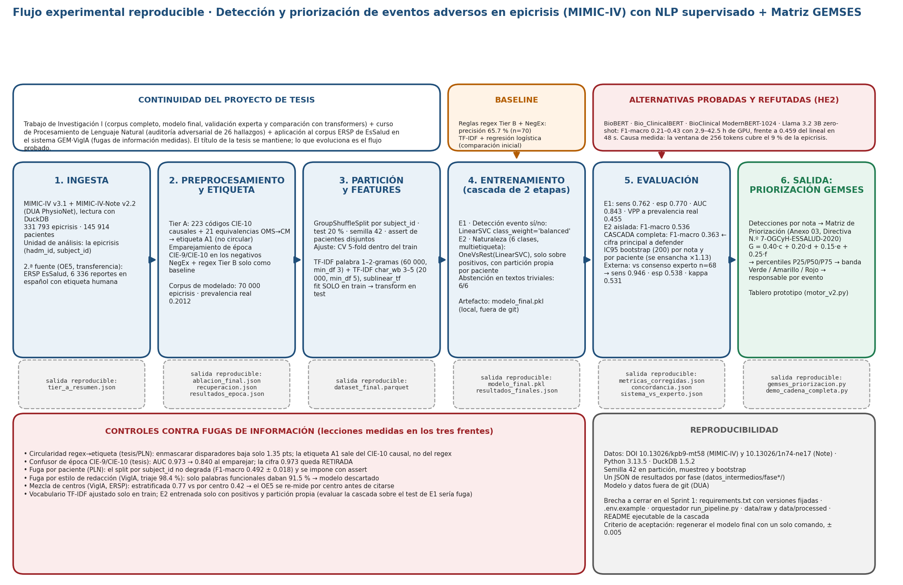

Un flujo de procesamiento (pipeline) que convierte texto libre de historias clínicas en clasificaciones de riesgo accionables, operacionalizando un modelo de excelencia sanitaria adoptado normativamente por EsSalud sobre el dataset clínico abierto más usado en el mundo. Estado a septiembre de 2026: modelo final en cascada (TF-IDF + LinearSVC) entrenado sobre 70 000 epicrisis, validado contra un panel experto y transferido a un corpus en español; borrador de tesis de 107 páginas (Cap. I–VI). Una sola tesis, en continuación: integra Tesis I, el curso de PLN y GEM·VigIA.
Los eventos adversos en hospitalización figuran entre las diez principales causas de muerte y discapacidad en el mundo. Más del 50 % serían evitables si se detectaran a tiempo — pero el 80 % de la evidencia que necesitamos vive en texto libre que ningún sistema lee.
En EsSalud, durante 2025 se registraron 515 493 egresos hospitalarios pero solo se notificaron 14 275 eventos adversos (tasa 2.77 %), evidenciando un subregistro del 72 %. SUSALUD impuso 12 multas por S/ 8.48 M en 2025 (acumulado 2024-25: S/ 11.9 M). La OCDE (2017) estima que el 15 % del gasto hospitalario se consume en consecuencias de eventos adversos.
Cada hito documentado, con fecha exacta. Sin atajos, sin saltos de fe metodológicos.
% fuente: verificado por script. Decisión de alcance: sin más anotación; etiqueta A1 como estándar plata principal.Ya no es un plan: es el flujo que se ejecutó, con la misma partición y semilla para todas las comparaciones. Un modelo lineal sobre TF-IDF ganó a todos los transformers biomédicos probados, y la razón está medida: ninguno lee la epicrisis entera.
Seis etapas con la salida reproducible de cada una, el baseline, las alternativas refutadas, los controles contra fugas medidos en los tres frentes y el estado honesto de reproducibilidad.

La Directiva N.º 7-OGCyH-ESSALUD-2020 tipifica 231 eventos adversos en 12 naturalezas OMS. Este estudio clasifica su detectabilidad en MIMIC-IV en 4 tiers.
| Naturaleza | Total | Tier A | Tier B | Tier C/D |
|---|---|---|---|---|
| Comportamiento | 14 | 4 | 7 | 3 |
| Cuidado del Paciente | 19 | 9 | 6 | 4 |
| Diagnóstico | 2 | 2 | 0 | 0 |
| Dispositivo Médico | 9 | 2 | 5 | 2 |
| Historia Clínica | 23 | 0 | 0 | 23 |
| Infección | 49 | 38 | 8 | 3 |
| Medicación | 33 | 18 | 11 | 4 |
| Procedimiento | 34 | 15 | 14 | 5 |
| Sangre/Hemoderivados | 19 | 6 | 9 | 4 |
| Gestión Organización | 21 | 0 | 10 | 11 |
| Nutrición | 6 | 0 | 5 | 1 |
| Insumos | 2 | 0 | 0 | 2 |
| Total | 231 | 94 | 75 | 62 |
Actualización a septiembre de 2026. La clasificación en tiers del Anexo 02 se mantiene; lo que cambió es cómo se usa. El Tier A pasó de 149 a 223 códigos CIE-10 causales y, en la Fase 8, se descubrió que 43 de ellos no existían en MIMIC-IV (codificación CIE-10-CM, no OMS): con 21 equivalencias OMS→CM, Medicación pasó de 209 a 14 295 ingresos y la unión A1 de 18 989 a 35 034 notas. Las clases con n insuficiente (Sistema/Organización, Sangre/Hemoderivados, Nutrición) quedan declaradas no viables en el modelo final. La validación Tier C por microbiología (Fase 5) se cerró como resultado negativo: 17.6 % de cobertura, VPP 0.62 solo como cota superior.
No son promesas: cada cifra está en un archivo de resultados del repositorio de la tesis (privado desde el 28-jul-2026 por protección de datos personales del corpus ERSP).
Aporte original que no aparece en ninguno de los 12 papers revisados: el mapeo de las cuatro dimensiones del modelo a variables observables en el dataset abierto. Constituye un resultado publicable en sí mismo.
| Dimensión GEMSES | Peso | Variable proxy en MIMIC-IV | Justificación |
|---|---|---|---|
| Tiempo (c) | 0.40 | Length of Stay prolongado vs mediana DRG | Outcome más estudiado en MIMIC-IV [5][6][7]; correlaciona con costos y complicaciones |
| Calidad (d) | 0.20 | Códigos ICD-9/10 de complicaciones intrahospitalarias + NER de eventos en notas | ICD codes son labels estándar; NER validado por [1][2][3] |
| Costos (e) | 0.15 | DRG weight asignado + número de procedimientos invasivos adicionales | Proxy estándar de costos en MIMIC; documentado en [7] |
| Satisfacción (f) | 0.25 | Readmisión no planificada 30 días + alta contra recomendación médica | Proxy aceptado [6]; AMA discharge correlaciona con experiencia adversa |
No es un trabajo aislado de laboratorio. Es una metodología transferible al sistema sanitario peruano y latinoamericano, alineada con normativa institucional vigente.
Alivia el cuello de botella manual en la codificación y priorización de Eventos Relacionados con la Seguridad del Paciente (ERSP) regulados por la Directiva N.º 7-OGCyH-ESSALUD-2020. Una sola IPRESS puede procesar miles de eventos al año — automatización significa intervenciones oportunas.
Metodología transferible a cualquier IPRESS pública peruana que recolecte notas clínicas. La transferencia al castellano ya se ejecutó (OE5) sobre 6 336 reportes ERSP de EsSalud con TF-IDF + LinearSVC, sin licenciamiento; su cifra por centro asistencial está en re-medición.
Demuestra que un modelo de excelencia sanitaria publicado en Latinoamérica (GEMSES, Pérez Pérez 2021) puede operacionalizarse mediante IA moderna. Posiciona la región como productora de marcos, no solo consumidora.
Reducción de daños evitables. Detección temprana de caídas, errores de medicación, infecciones nosocomiales, complicaciones quirúrgicas — los eventos que la directiva manda a registrar pero que hoy llegan tarde al nivel de gestión correcto.
Un proyecto académico-investigativo serio no es escribir un Word con bibliografía. Es ensamblar evidencia, infraestructura, gobernanza ética y narrativa científica simultáneamente.
La prueba de concepto de mayo (reglas + NegEx, precisión 65.7 % sobre 70 detecciones) fue superada por un modelo entrenado sobre 70 000 epicrisis con partición por paciente. Tres hallazgos cambiaron el rumbo: la etiqueta débil era circular, los negativos tenían otra época de codificación, y ningún transformer probado lee la epicrisis entera. Cada cifra viene de un JSON de resultados; las que el propio proceso invalidó (AUC 0.973, 88.2 %, 98.4 %) no se citan.
Sensibilidad 0.762 (IC95 0.752–0.772) · especificidad 0.770 (0.759–0.780) · AUC 0.843 · VPP a prevalencia real 0.455. Abstención 6/6 ante textos triviales. El detector previo (AUC 0.973) se retiró al descubrir que separaba épocas de codificación CIE-9/CIE-10, no eventos.
Seis naturalezas, multietiqueta: F1-macro 0.536 · F1-micro 0.745 aislada. Evaluada extremo a extremo tras la etapa 1: F1-macro 0.363, F1-micro 0.493. El IC por paciente es 1.13 veces más ancho que el IC por nota. Infección y Procedimiento son las clases fuertes; Sistema/Organización (n = 66) rinde 0.0 y se declara no viable.
Dos anotadores a ciegas (78 casos comunes): kappa 0.64 (IC95 0.41–0.82). Sistema contra consenso experto (n = 68, infección): sensibilidad 0.946 · especificidad 0.538 · VPP 0.897 · kappa 0.531. El umbral de la hipótesis general (≥ 0.61) no se alcanza; el subregistro de códigos en los controles fue 0.25 (4/16). Decisión de alcance (20-set): la etiqueta A1 es el estándar plata principal y el panel, validación secundaria.
Misma partición y semilla: TF-IDF + LinearSVC F1-macro 0.459 en 48 s; Bio_ClinicalBERT ponderado 0.354 (4.0 h); Bio_ClinicalBERT 0.249; BioBERT 0.210 (2.9 h c/u); BioClinical ModernBERT-1024 0.428 (42.5 h). Llama 3.2 3B zero-shot: kappa 0.0 (dice sí a todo). La epicrisis mediana tiene 3 148 tokens; la ventana de 256 cubre el 9 %. Resultado negativo publicable, no un fracaso.
6 336 reportes únicos con codificación humana. T1 evento vs incidente F1-macro 0.860; T2 naturaleza 0.7675; T3 severidad 0.606 (GRAVE 0.148, n = 23). Alerta cruzada con GEM·VigIA: el mismo corpus con partición por centro asistencial dio 0.42 en naturaleza; la cifra estratificada se reporta solo como cota superior hasta re-medirla.
Las etiquetas son el cuello de botella, no la arquitectura. Cuatro fugas medidas: circularidad regex→etiqueta (enmascarar baja 1.35 pts), época CIE-9/10 (AUC 0.973 → 0.840), estilo de redacción (triaje 98.4 % → descartado) y mezcla de centros (0.77 → 0.42). En cada una, un modelo más potente habría sido más engañoso. Y cuando la regla es auditable y rinde parecido, gana la regla (detector de muerte: regex F1 0.622 vs ML 0.578).
Una tesis seria se mide tanto por los entregables académicos como por la infraestructura que los soporta. Este es el inventario completo del trabajo invisible pero indispensable.
En mayo se detectó una discrepancia entre el Excel de trabajo de la Directiva (Satisfacción 0.20, suma 0.95) y el libro GEMSES (0.25, suma 1.00). En septiembre se abrió el PDF oficial de la norma (RGG 402-GG-ESSALUD-2020) y se verificó el Anexo 03. El resultado y la decisión aplicada:
G = c·0.40 + d·0.20 + e·0.15 + f·0.25
Suma de pesos = 1.00. Forma teórica del modelo publicado con ISBN 978-612-00-6235-7.
G = c·0.40 + d·0.20 + e·0.15 + f·0.25
Verificado el 20-set-2026 en el PDF de la RGG 402-GG-ESSALUD-2020 (Lima, 4 de marzo de 2020): escala Muy alto 9 / Alto 6 / Medio 3 / Bajo 1 / Nulo 0 y pesos 0.40 / 0.20 / 0.15 / 0.25. Coincide con el libro. El valor 0.20 provenía del Excel de trabajo, no de la norma.
El módulo gemses_priorizacion.py (01-ago-2026) usa las fórmulas oficiales del Anexo 03 con suma 1.00. Los resultados de mayo calculados con 0.20 se consideran preliminares. La comparación 0.20 vs 0.25 queda como análisis de sensibilidad opcional en el Cap. VI.
La descripción de la Matriz en el cuerpo de la Directiva menciona «Impacto Ambiental» como quinta dimensión, pero el Anexo 03 usa cuatro pesos. La discrepancia está señalada desde la auditoría del 23-jun-2026 y se reporta como limitación, con una recomendación al Comité de Calidad de EsSalud para la próxima revisión de la norma.
El roadmap de seis fases de julio se ejecutó y se reordenó por la evidencia: la fusión multimodal y BETO nunca se corrieron; en su lugar se probaron y refutaron los transformers y se transfirió el pipeline al español. Los sprints de MIA-14 apuntan a lo que el checklist del curso señaló como carencia: reproducibilidad.
No "aprender IA y aplicarla a algo". Operacionalizar un modelo de excelencia institucional adoptado normativamente, sobre datos abiertos, con metodología reproducible. Eso es lo que diferencia a esta tesis del estado del arte.
Trazabilidad conceptual entre los 9 principios rectores del modelo y las salidas computacionales del flujo de procesamiento. El modelo deja de ser cualitativo para volverse herramienta de soporte cuantitativo.
Cascada TF-IDF + LinearSVC con partición por paciente, cuatro fugas de información medidas y controladas, y resultado negativo documentado de los transformers biomédicos (HE2). Validación con panel experto y transferencia al español. Reproducible bajo PhysioNet DUA; Sprint 1 cierra el orquestador.
Alivia el cuello de botella manual en la codificación y priorización de ERSP regulados por la Directiva N.º 7-OGCyH-ESSALUD-2020. Ya probado sobre el corpus ERSP de EsSalud en español (OE5).
Modelo de excelencia publicado por el autor en 2021, validado académicamente y cuya Matriz de Priorización fue adoptada normativamente por EsSalud en la Directiva N.º 7-OGCyH-ESSALUD-2020. Esta tesis es el primer esfuerzo documentado en convertirlo en una herramienta automatizada de soporte a la decisión clínica mediante inteligencia artificial.